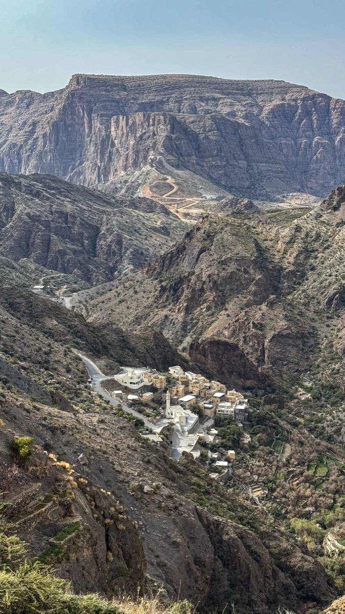

Wahiba Sands : dunes, camps dans le désert et meilleure période
Accès depuis Mascate, activités dans les dunes et fonctionnement des camps. Lire le guide.
Les réponses pratiques de notre équipe sur les lieux et les questions qui comptent pour préparer un voyage à Oman.
Accès depuis Mascate, activités dans les dunes et fonctionnement des camps. Lire le guide.

La traversée en barque, la randonnée jusqu'aux bassins et à la grotte, et quand partir. Lire le guide.

Le point de contrôle 4x4, le plateau de Saiq, les villages en terrasses et la meilleure période. Lire le guide.

Horaires et tenue pour la Grande Mosquée, corniche et souk de Mutrah, vieux Mascate. Lire le guide.
Pourquoi octobre à avril convient à la plupart du pays, et l'exception estivale de Salalah. Lire le guide.

Ce que l'on peut voir en 4, 6, 8 ou 11 jours entre côte, montagnes et désert. Lire le guide.

L'entrée gratuite de 14 jours, quand demander un eVisa et les règles d'entrée. Lire le guide.
Dites-nous ce que vous avez lu et ce qui vous attire ; nous construirons l'itinéraire autour.
Demander un devis gratuit →